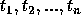
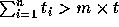

| Raucous Rockers |
You just inherited the rights to n previously unreleased songs recorded by the popular group Raucous Rockers. You plan to release a set of m compact disks with a selection of these songs. Each disk can hold a maximum of t minutes of music, and a song can not overlap from one disk to another. Since you are a classical music fan and have no way to judge the artistic merits of these songs, you decide on the following criteria for making the selection:
The input consists of several datasets. The first line of the input indicates the number of datasets, then there is a blank line and the datasets separated by a blank line. Each dataset consists of a line containing the values of n, t and m (integer numbers) followed by a line containing a list of the length of n songs,  ordered by the date they were written (Each is between 1 and t minutes long, both inclusive, and  .)
The output for each dataset consists of one integer indicating the number of songs that, following the above selection criteria will fit on m disks. Print a blank line between consecutive datasets.
2 10 5 3 3, 5, 1, 2, 3, 5, 4, 1, 1, 5 1 1 1 1
6 1